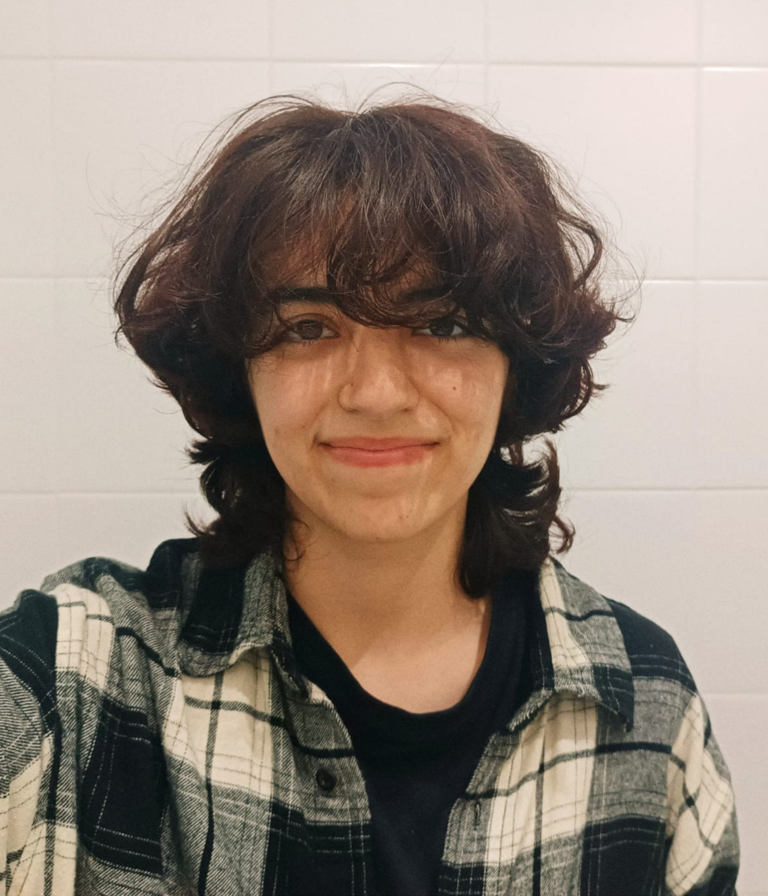
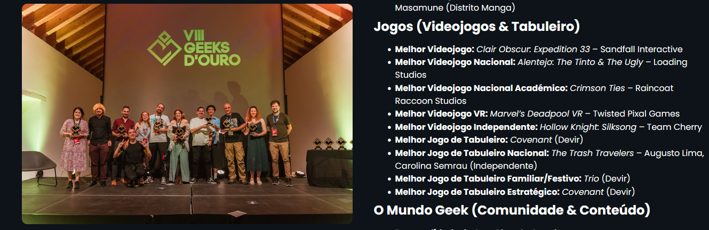

About Me
Hi, I'm Leo! I'm a 19 year old who is passionate about learning and trying out new things. Because of this, I have gathered a big amount of skills in various disciplines!
This is also the reason why I have so many hobbies, and am constantly finding new ones. Some of my favourite hobbies are reading, taking photos, climbing, going to the gym, and writing. But I like so many more!
Fun Fact
I have this real interest in learning how everything around me works; so little by , random night research at a time, I learn a bit more about tech, history, art, etc. I really do love to research things.
Motives To Pursue Game Dev
My biggest motives for wanting to pursue a career in game dev are, to put it simply, because ever since I was 5 years old, I've loved to make game ideas, games I'd like to learn how to do! And so, since then, I've started to learn, little by little, how to make games. This journey first started with scratch, back in 2015. It later on progressed to learning C#, Unity, Godot, then Python, and then, finally, I entered university to pursue games!

Leo Torrão _______________________
Languages I Speak
I am fluent in English and Portuguese, and know a bit of Spanish. I do have an interest in learning new languages, so that's a goal for the future!
My Game Jams Journey
I entered my first game jam in 2020, when I was locked up at home, and a week after starting to learn C# on my own. It was a very fun experience, and it, quite literally, forced me to learn new things FAST. That is exactly why I LOVE GAME JAMS. I do wish I had joined more by now, but sometimes I am just exploring other areas of interest and don't have the time to join more.
But I did join quite a few more before university. I even joined a jam as an artist, which was also very helpful to test out more opportunities. I actually really liked doing the art for the game, but I do prefer to help the game development more in the game design area.
So far I have participated in 8 game jams and they all have been great experiences to learn new things. I do hope to participate in many more, and meet many new devs along the way!
My Active Connection With The Game Dev Community
Ever since I joined my first game jam I thought that I wanted to keep doing it and having fun experiences with others that shared the same passion as I do.
That’s why, besides Game Jams, I started going to events when I got to university. I even joined clubs and discord servers related to game dev, such as Game Dev Técnico.
I joined GameDev Técnico in my first university year, I later joined an internal project called "Escape"; joined the executive production team, the ones who organized game jams for the club; and joined the group of students in charge of representing the club as a secretary of the fiscal council. In the summer of 2026 I ended up leaving the executive production team due to lack of time, due to university work, and to me wanting to focus on more different projects. Overall it has been a wonderful experience.
Besides this club and discord servers I joined I also started going to in person events like DevGAMM, Game dev meets by game dev lisbon, and now IGDA PT, etc. I also had the opportunity to go on a SAP related to accessible games, which I found very enriching for my game design process.
Game Awards

While making games for university, me and my team (university team) started to get nominated for games awards, and even won one!
The most fun about game awards was definitely to attend the events and be surrounded by other game dev professionals.
Below are the games I have participated in the development and that got recognition in these award events.
Crimson Ties - Awarded Best National Student Game GeeksDeOuro 2026
Mixtape Journey - Nominated For Best Student Game Of The Year - Spotlight Awards 2025
My Skills In Different Areas
Game Design
I only started to learn about game design while in university, but I did research a lo t outside of class in order to get better, and learn more concepts that we don’t learn in class. This is the area I feel most comfortable in game dev.
Game Programming
This is the game dev discipline I have more years of experience with. I did actually start programming back in 2020, so it's a field I am most fond of. Even as I reckon I am good at it, it is not my ultimate goal in game dev, but rather, a really helpful skill to have!
Animation
I have loved animation ever since 2017. I did multiple animations on my old tablet as a child, and I loved it! Although this area can be related to game dev, I only started to apply it to game dev in university. And I did really like it, but once again, it is not my "ultimate calling" in game dev, but for sure a great hobby.
Game Art
Art, art is my eldest friend. Ever since I can remember I have drawn, I drew so much that I progressed really fast at a young age. Sadly, as I got older, I started to have less and less time to draw, thus stalling my progress in art. And while I love drawing, I actually never really learned to draw digitally as well as I do on paper. So I believe it is safe to say that pursuing game art is out of my league.
Sound Design
Sound design is my newest interest, in terms of game dev. I learned about it in my second university year, and it was quite fun! I really loved working with Adobe Audition and playing with field recorders. While I do really enjoy it, and love anything related to music and sound, I wouldn't want to pursue it in games, mainly because there is something I enjoy more.